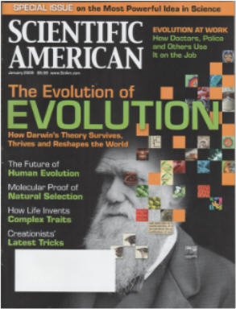

More reasonable evolutionists realize that survival of the fittest may not be as important as survival of the luckiest, and are looking for real evidence that can settle the issue once and for all.
More reasonable evolutionists realize that survival of the fittest may not be as important as survival of the luckiest, and are looking for real evidence that can settle the issue once and for all.| Feature Article - January 2009 |
| by Do-While Jones |
Scientific American celebrates the 200th anniversary of Darwin's birth.
|
 |
In typical tabloid style, the cover of the current issue of Scientific American is full of provocative and misleading headlines. People who don't actually read the articles might be led to believe that Darwin's Theory is thriving and reshaping the world, despite the fact that it is desperately fighting to survive. The cover of their special issue calls evolution, "the most powerful idea in science." It claims that doctors, police, and others use evolution on the job. It claims there is molecular proof of natural selection. They claim scientists now know "how life invents complex traits." The cover also promises to tell us the future of human evolution, and will expose "creationists' latest tricks." But, as is typical with tabloids, the truth is far from what the cover claims. |
The theory of evolution can't be "the most powerful idea in science" unless the theory is actually true. Since the theory is false, it would be more accurately described as the most useless idea in science.
If Darwin's theory is thriving, why did a November 2008 Harris poll show that only 47% of Americans believe it? 1 After 150 years of intense propaganda, less than half of all Americans believe it. That's not thriving. If the theory of evolution were thriving, evolutionists would not have to go to court to prevent any criticism of it. The theory of evolution is definitely not thriving.
Despite this, the magazine begins its ode to evolution with an editorial, in which the editor says,
|
The naturalist [Darwin] would approve of how evolutionary science continues to improve. 2 |
We don't know how the editor knows what Darwin would think. His only justification is that,
|
Today, 200 years after his birth and 150 years after Origin of Species, Darwin's legacy is a larger, richer, more diverse set of theories than he could have imagined. 3 |
Yes, Darwin's theory has been replaced by a diverse set of theories because all the proposed theories of evolution have such major flaws in them. He admits,
|
Just as most of the weird Cambrian monsters eventually went extinct, many current hypotheses in evolution will also wither over time. 4 |
That's because the current hypotheses are wrong! If they were correct, they would endure.
In the opinion page, the editors try to make the case for the importance of the theory of evolution. They claim,
|
Most important, Darwin's legacy has a direct bearing on how society makes public policy and even, at times, on how we choose to run our lives. Overfishing of mature adults selects for smaller fish (and higher prices at the supermarket), and excessive use of antibiotics leads, by natural selection, to drug resistance, all considerations for regulators and legislators. Many modern diseases--obesity, diabetes and autoimmune disorders--come about, in part, because of the mismatch between our genes and an environment that changes more quickly than human genomes can evolve. Understanding this disparity may help convince a patient to make a change in diet to better conform to the demands of a genetic heritage that leaves us unable to accommodate excess, refined carbohydrates and saturated fats from a steady intake of linguine alfredo and the like. 5 |
Overfishing has nothing to do with whether or not fish evolved from invertebrates. Whether or not we should eat linguine alfredo has nothing to do with whether or not humans evolved from apes. The only thing in the entire paragraph that is even remotely related to evolution is the issue of antibiotic resistance. But antibiotic resistance only relates to changes in the percentages of existing species in populations, not the origin of radically new species.
Fanciful, incorrect speculation about how living things came into existence has nothing to do with fishing, diet, or drugs. So, despite what Scientific American claims, the theory of evolution is not vital for the advancement of civilization.
The articles start in earnest on page 38, with "Darwin's Living Legacy." A sidebar tells us,
|
Key Concepts Charles Darwin's insights about evolution have withstood 150 years of scrutiny. But evolutionary theory has broadened and changed as his ideas have been melded with genetics. Evolutionary biology still must contend with some of the same questions that preoccupied Darwin: What, for one, is a species. 6 |
The second two "key concepts" refute the first. Darwin's insights have not withstood scrutiny. He was completely ignorant of genetics, believing that climate, diet, and exercise caused inheritable changes. He was wrong. Furthermore, evolution still can't explain the origin of species.
Darwin observed some transient variation in finches in response to environmental conditions.
|
Twenty years later Darwin would translate his understanding of finch adaptation to conditions on different islands into a fully formed theory of evolution, one emphasizing the power of natural selection to ensure that more favorable traits endure in successive generations. 7 |
His observations were correct, but his extrapolation was wrong. As long as Arnold Schwarzenegger worked out at the gym, he had a muscular, sculpted body. Since he has become governor of California, he has not won any bodybuilding contests. Finch beaks can change rapidly over a few generations; but there is a limit to the amount they can change, and the change may not last. Darwin thought he was seeing a slow, steady progression; but he wasn't.
|
The Grants are just one among many groups that have embarked on missions to witness evolution in action, exemplars of how evolution can at times move in frenzied bursts measured in years, not eons, contradicting Darwin's characterization of a slow-and-steady progression. 8 |
The "evolution" that Darwin, and Peter and Rosemary Grant witnessed, is more accurately termed "variation." Minor variation does occur in years. Evolution of new life-forms does not occur on any time scale.
The theory of evolution is not important from a scientific point of view--but it is important from a philosophical point of view.
|
Just as Copernicus cast the earth out from the center of the universe, the Darwinian universe displaced humans as the epicenter of the natural world. 9 |
This is what the fuss is all about. The theory of evolution has political and religious implications. The theory of evolution can be used as a tool to make animals equal to humans, giving animals rights equal to humans. It can be used to discredit three of the world's major religions and advance atheism. There are political and religious motivations behind the effort to protect the theory of evolution.
|
Natural selection accounts for what evolutionary biologist Francisco J. Ayala of the University of California, Irvine, has called "design without a designer," a term that parries the still vigorous efforts by some theologians to slight the theory of evolution. "Darwin completed the Copernican Revolution by drawing out for biology the notion of nature as a lawful system of matter in motion that human reason can explain without recourse to supernatural agencies," Ayala wrote in 2007. 10 |
The theory of evolution is the creation myth of atheism, and is incompatible with the creation myth of the Judeo-Christian-Islamic world. If atheists can get their creation myth taught as fact in the public schools, it is a victory for their secular humanist religion.
Natural selection is at the foundation of the theory of evolution. Natural selection is a real phenomenon that does occur, to some extent, in the real world. The debate (even among evolutionists) has to do with how powerful it is. The hard-core evolutionists argue that it is very powerful. It has to be. Just look at all the creatures that have evolved through a process of natural selection! More reasonable evolutionists realize that survival of the fittest may not be as important as survival of the luckiest, and are looking for real evidence that can settle the issue once and for all.
|
Much of the recent experimental work on natural selection has focused on three goals: determining how common it is, identifying the precise genetic changes that give rise to the adaptations produced by natural selection, and assessing just how big a role natural selection plays in a key problem of evolutionary biology--the origin of new species. 11 |
Natural selection is only half of the process. Natural selection needs variations to select among. Most modern evolutionists believe that random mutations cause the variations (although that hypothesis is beginning to lose support).
|
Adaptive evolution is therefore a two-step process, with a strict division of labor between mutation and selection. In each generation, mutation brings new genetic variants into populations. Natural selection then screens them: the rigors of the environment reduce the frequency of "bad" (relatively unfit) variants and increase the frequency of "good" (relatively fit) ones. 12 |
But how well does natural selection screen the changes? How does it work at the molecular level? Scientists keep going back and forth on this issue.
|
Just what proportion of all evolutionary change in DNA is driven, over millions of years, by natural selection--as opposed to some other process? Until the 1960s biologists had assumed that the answer was "almost all," but a group of population geneticists led by Japanese investigator Motoo Kimura sharply challenged that view. ... The process is called random genetic drift; it is the heart of the neutral theory of molecular evolution. By the 1980s many evolutionary geneticists had accepted the neutral theory. But the data bearing on it were mostly indirect; more direct, critical tests were lacking. ... The new data suggest that the neutral theory underestimated the importance of natural selection. 13 |
The "truth" keeps changing. Before 1960, natural selection was believed to be responsible for almost all genetic changes. By 1980, natural selection was widely rejected in favor of the neutral theory. Here is what is "true" today.
|
In one study a team led by David J. Begun and Charles H. Langley, both at the University of California, Davis, compared the DNA sequences of two species of fruit fly in the genus Drosophila. They analyzed roughly 6,000 genes in each species, noting which genes had diverged since the two species had split off from a common ancestor. By applying a statistical test, they estimated that they could rule out neutral evolution in at least 19 percent of the 6,000 genes; in other words, natural selection drove the evolutionary divergence of a fifth of all genes studied. 14 |
It is important to note that this is a study of two variations of a fruit fly--it doesn't tell us anything about the evolution of new creatures.
|
Even when biologists turn to ordinary physical traits ("beaks, biceps and brains") and are confident that natural selection drove evolutionary change, they are often in the dark about just how it happened. 15 |
But, their ignorance of how it could possibly have happened does not shake their confidence that it did happen.
|
The main difficulty is that the increase in fitness arising from a beneficial mutation can be very small, making evolutionary change quite slow. One way evolutionary biologists have coped with this problem is to place populations of rapidly reproducing organisms in artificial environments where fitness differences are larger and evolution is, therefore, faster. 16 |
Let's think about this for a moment. In nature, a beneficial mutation might provide a survival advantage that is so small that it is inconsequential. It might be negligible compared to survival of the luckiest. (It isn't always the slowest gazelle that wanders near the crouching lion hidden in the grass, or the egg of the least fit bird that is eaten by the snake.) So artificial selection is used in the laboratory to amplify the importance of selection of beneficial mutations. But proving that artificial selection works in a controlled environment where other factors have been carefully eliminated certainly does not prove that natural selection works in the real world in the presence of other more powerful forces.
|
One of Darwin's boldest claims for natural selection was that it explains how new species arise. (After all, the title of his masterpiece is On the Origin of Species.) But does it? What role does natural selection play in speciation, the splitting of a single lineage into two? To this day, these questions represent an important topic of research in evolutionary biology. To understand the answers to those questions, one must be clear about what evolutionists mean by "species." Unlike Darwin, modern biologists generally adhere to the so-called biological species concept. The key idea is that species are reproductively isolated from one another--that is, they have genetically based traits preventing them from exchanging genes. 17 |
After 150 years, we still don't know how species arise, so it is still "an important topic of research in evolutionary biology." Despite this, the last two sentences of Orr's article are:
|
Indeed, most biologists now agree that natural selection is the key evolutionary force that drives not only evolutionary change within species but also the origin of new species. Although some laypeople continue to question the cogency or adequacy of natural selection, its status among evolutionary biologists in the past few decades has, perhaps ironically, only grown more secure. 18 |
Yes, it is ironic that despite the fact that biologists don't understand how important natural selection is for creating variations in existing species, and have no evidence whatsoever that natural selection can create new kinds of living things, natural selection's status has grown more secure in their eyes. It seems that the previously mentioned political and religious implications outweigh experimental experience.
The next article in the Scientific American special issue on evolution is perhaps the best because it contains a lot of accurate information about genetics and the history of Darwin's theory, and very little nonsense about evolution. David Kingsley accurately notes that,
|
Darwin was not only unable to say where variants came from, he did not explain how those new traits could spread in subsequent generations. He believed in blending inheritance, the idea that offspring take on characteristics intermediate between their parents. But even Darwin recognized that the theory was problematic because if traits truly blended, then any rare new variant would be progressively diluted by generations of breeding with the great mass of individuals that did not share the trait. 19 |
Kingsley then goes on to describe Gregor Mendel's breakthrough breeding experiments and the Watson/Crick discovery of the structure of DNA. This allows him to give a correct explanation of how traits are passed on. What he fails to mention is that this doesn't really solve the dilution problem. In sexual reproduction, a rare new variant is only inherited by half of the individual's children, one quarter of the individual's grandchildren, and one eighth of the individual's great-grandchildren, etc. The rare new variant won't become widely established unless the new variant has a significantly better chance of survival, and there is exceptionally strong competition for survival, which is very rarely the case.
But, since this is a special issue on evolution, not genetics, Kingsley had to try to address a major fallacy of the theory of evolution. Evolutionists confuse microevolution (minor changes in existing features) with macroevolution (the origination of entirely new features). Microevolution works through the elimination of existing undesirable genes in the gene pool. Macroevolution would require addition of previously non-existent genes to the gene pool. Still, they try to claim that the small changes that really do occur due to microevolution can accumulate without limit, resulting in macroevolution.
|
Modern-day critics of Darwin and evolutionary theory have often suggested that small differences such as these between individuals might arise by natural processes, but bigger structural differences between species could not have done so. Many small changes can add up to big ones, however. In addition, certain genes have powerful effects on cell proliferation and cell differentiation during embryonic development, and changes in those control genes can produce dramatic changes in the size, shape and number of body parts. A subspecialty within evolutionary biology that has come to be known as evo-devo concentrates on studying the effects of changes in important developmental genes and the role they play in evolution. 20 |
In a previous newsletter we explained evo-devo in detail. 21 Suffice it to say, evo-devo simply moves the problem back in time. At its foundation, evo-devo postulates that all the required genes already existed in the first living thing, and just activated themselves in later creatures when they were needed.
In an attempt to show that many small changes can add up to big ones, Kingsley uses the examples of domesticated maize and stickleback fish.
|
Today many freshwater stickleback species show structural differences that are greater than those seen between different genera of fish, including 30-fold changes in the number or size of their bony plates, the presence or absence of entire fins, and major changes in jaw and body shape, tooth structures, defensive spines and body color. 22 |
The editors probably added the pictures of stickleback fish on page 57. That was a bad decision on their part because the stickleback fish in the pictures just look like differently colored guppies. It's not as impressive as the mental image of bony plates and major changes in jaw and body shape. The reader's natural reaction is, "Is that all they are talking about?"
If that is the best example they can come up with, they haven't got a leg to stand on. If they could show stickleback fish that had evolved legs and could walk upright on them, then they would have something.
They miss the point by characterizing their problem as a "little change verses big change" issue. Their real problem has to do with "changing the shape, color, or size of something that already exists" verses "creating an entirely new functional component."
On page 54, the authors have included a picture of David Kingsley, with a biography which begins, "David M. Kingsley is professor of developmental biology at the Stanford University School of Medicine and a Howard Hughes Medical Institute investigator. His studies of how genes control the development and maintenance of skeletons and joints shed light on modern health problems as well as on the evolution of new animal forms over the course of millennia." Presumably, this is to justify their claim on the cover that doctors use evolution on the job. But the very useful study of how genes control development is totally unrelated to useless, fanciful speculation about how random changes might have caused new animals to arise. Doctors can learn useful information by comparing genetic similarities and differences between individuals of the same species, and between individuals of different but similar species, and between individuals of totally different species. Whether doctors believe those differences are due to random changes, intelligent design, or a divine punishment for sin, makes no difference in how that knowledge is used to treat patients.
How genes function can be determined by experimental science. Comparison of genes is a vital part of that study. How and why genes exist are issues that are outside the domain of science, and inside the domain of philosophy.
The theory of evolution is irrelevant to medicine. We have no doubt that Kingsley could learn much more about how genes work if he wouldn't waste so much time in useless speculation about how random genetic changes could cause reptiles to grow breasts and become mammals.
The complete foolishness of trying to mix evolution with medicine is strikingly illustrated in Neil Shubin's article. 23 The on-line version is even more preposterous because it was given this ridiculous title and subtitle:
|
The Evolutionary Origins of Hiccups and Hernias How biological hand-me-downs inherited from fish and tadpoles evolved into human maladies 24 |
His silly premise is,
|
To make sense of our own bodies, we need to examine the history we share with everything from microbes and worms to fish and primates. 25 |
If you want a good laugh, you should read this article. But our six-page newsletter is already eight pages, and we are only half finished with our review. Shubin's article is too silly to bother with.
This is a good stopping point. Let's look back at what we have seen so far, and give you a little peek into the conclusion of our review next month.
The cover of the special issue of Scientific American on "the most powerful idea in science" promised to tell us:
| Quick links to | |
|---|---|
| Science Against Evolution Home Page |
Back issues of Disclosure (our newsletter) |
| Web Site of the Month |
Topical Index |
Footnotes:
1
http://www.marketwatch.com/news/story/More-Americans-Believe-Devil-Hell/story.aspx?guid= %7B9FF6758C-00C0-4673-81B9-6D506085F974%7D
2
Rennie, Scientific American, January 2009, "Dynamic Darwinism", page 6 https://www.scientificamerican.com/article/dynamic-darwinism/
3
ibid.
4
ibid.
5
The Editors, Scientific American, January 2009, "A Theory for Everyman", page 32 (titled on-line as "Why Everyone Should Learn the Theory of Evolution") https://www.scientificamerican.com/article/why-everyone-should-learn-evolution/
6
The Editors, Scientific American, January 2009, page 38, https://www.scientificamerican.com/article/darwins-living-legacy/
7
Stix, Scientific American, January 2009, pages 38-43, https://www.scientificamerican.com/article/darwins-living-legacy/
8
ibid.
9
ibid.
10
ibid.
11
Orr, Scientific American, January 2009, "Testing Natural Selection", pages 44 - 50 https://www.scientificamerican.com/article/testing-natural-selection/
12
ibid.
13
ibid.
14
ibid.
15
ibid.
16
ibid.
17
ibid.
18
ibid.
19
Kingsley, Scientific American, January 2009, "From Atoms to Traits", pages 52 - 59, https://www.scientificamerican.com/article/from-atoms-to-traits/
20
ibid.
21
Disclosure, June 2006, "Evo Devo and the Biogenetic Law"
22
Kingsley, Scientific American, January 2009, "From Atoms to Traits", pages 52 - 59 https://www.scientificamerican.com/article/from-atoms-to-traits/
23
Shubin, Scientific American, January 2009, "This Old Body", pages 64 - 67 (titled on-line as "The Evolutionary Origins of Hiccups and Hernias") https://www.scientificamerican.com/article/this-old-body/
24
ibid.
25
ibid.